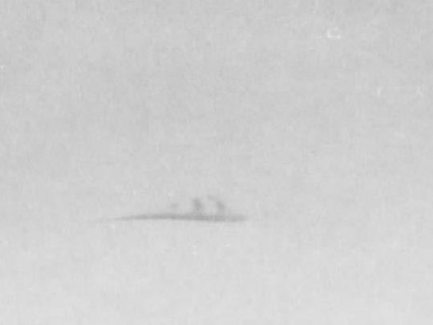
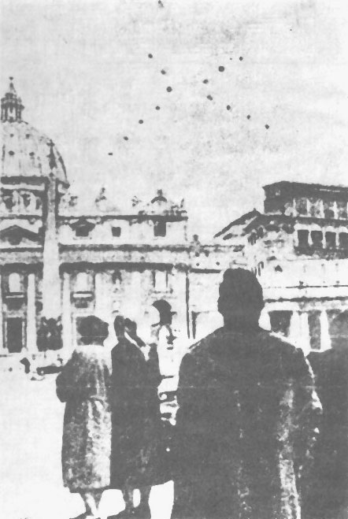
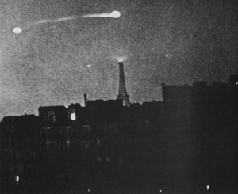

L'USAF annonce à Washington qu'elle a mis en place des
appareils photographiques dans tout le pays, équipés de grilles de diffraction pour analyser la nature des sources
de lumière de type ovni "The 1953 UFO
Chronology", NICAP.
Thunderjet de la Garde Nationale Aérienne de Georgie s'abattent en flamme
d'environ 3500 m d'altitude, tous ensemble. Le temps était orageux, mais juste avant l'écrasement des 4 appareils,
un des pilotes disait : Nous ne pouvons le manquer !
A Sherbrook (Nouvelle-Ecosse, Canada), Mme Orfei entend
frapper à la porte au milieu de la nuit et personne ne répond lorsqu'elle demande l'identité du visiteur. Lorsqu'on
entend frapper encore plus fort, son chien alsacien saute vers la porte, mais recule tout à coup, tremblant de peur,
et se réfugie dans un coin. Mme Orfei monte à l'étage et voit 2 indescriptibles
qui s'éloignent de la maison. Un peu plus tard un grand objet rond décolle à une centaine de mètres en émettant des
éclairs bleu-vert. La police constatera que des arbustes ont été brisés et qu'un objet d'un très grand poids s'est
posé Oltre il Cielo, vol. I.
Le commandement interarmées américain diffuse la JANAP
146.

Le "nuage" photographié à Redlands
À Redlands, un homme (26 ans) dit avoir découvert un ovni sur un cliché qu'il développait
d'une photo de concession automobile. La photo qui montre un phénomène sombre allongé avec 3 sallies verticales dans
le ciel au-dessus de la concession, est soumise au projet Blue Book, qui conclut à un nuage "Project
10073 Card", Black Vault.

Escadrille d'ovnis survolant le Vatican sur la place de San Pedro. Simple dessin sur une photo ?
A Hassleholm (Suède), observation Cas Blue Book n° 2838 non résolu.
René Coty est élu président de la République.
À El Cajon (Californie), les lieutenants de l'U.S. Navy
J. B. Howard et L. D. Linhard, pilotant des chasseurs
F9F-2, observent durant 10 objets ovales et argentés voler à plus de 400 noeuds (450
miles/h) de manière rectiligne Cas Blue Book n° 2840 non résolu.
Ovnis du Vatican (Rome, Italie), "escadrille d'ovnis" survolant
le Vatican sur la place de San Pedro.
A Marysville (Californie), Dick
Brandt (directeur de l'aéroport du comté de Yuba), observe durant une
soucoupe avec une lumière blue brillant, se reflétant sur un bâtiment voisin, rester stationnaire Cas Blue Book n° 2844 non résolu.

La photographie du 29 à Paris
A Paris (France), Paul Paulin photographie sur un temps d'exposition de 2 mn montrant un phénomène décrit
comme immobile puis "sautant" sur le côté pour redevenir immobile, entre la Tour Eiffel et le Parc des
Expositions Guieu, Jimmy..
Sur Radio Moscou : Les soucoupes volantes sont des engins mythiques qui décollent des pages de la presse
bourgeoise chaque fois que les milieux dirigeants de tel ou tel pays capitaliste, sur l'ordre de Washington,
essaient de faire accepter par le peuple le nouveau fardeau des dépenses militaires.
A la base Marine de Quantico (Virginie), des Marines observent
l'atterrissage d'un objet rond inconnu qui émet des lumières rouges Wilkins, Harold T.: U. 210.